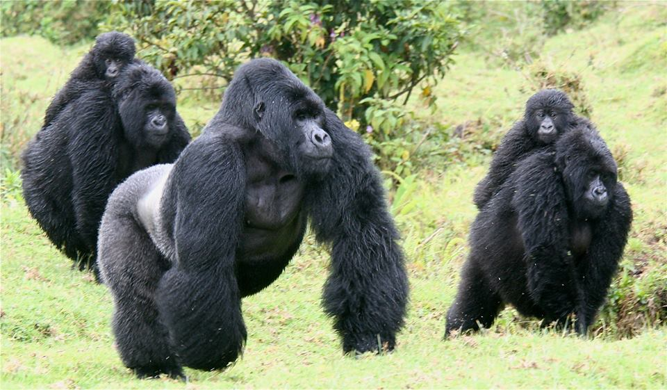

Tour Programs Rwanda 3 days

RWANDA – ( 3 nights / 4 days ) November 18, 2016
GORILLA TRACKING & LAKE KIVU TOUR – 3 NIGHTS / 4 DAYS
Day 1 – ARRIVAL » Drive to Volcanoes NP (115kms / 2hrs)
Arrive morning/lunchtime at Kigali International Airport and be met by your Driver Guide for a brief of your Rwanda visits. The Kigali city tours will specially welcome you to this “Land of a Thousand Hills”. Drive through the City towards the Kigali Genocide memorial Centre and thereafter proceed on to the City Centre for a quick late lunch. Visit the Caplaki Crafts market and after here start your 2-hr drive to Volcanoes NP. Dinner and Overnight at y Hotel and Lodge
Garden Place Hotel
Mountain Gorilla View Lodge
Virunga Lodge AI or Governors Sabyinyo Silverback Lodge AI
Day 2 – GORILLA TRACKING (Time taken with Gorillas:1hr) + TWIN LAKES VISIT
Early breakfast and proceed to the National Park headquarters for a Gorilla tracking experience in the Volcanoes National Park. Once you spot them you are allowed to spend an hour watching. This is perhaps one of the most breathtaking wildlife experiences on earth!!! You get so close to these awesome giant primates. Tracking the gorillas through the light mountain forest on the slopes of the Virunga is a magical experience. The trekking may be fairly strenuous; sometimes up to six hours or longer at a relatively high altitude. Your driver guide to request a shorter group for you if you cannot trek far OR if you have another activity in the afternoon. It is important to bring good hiking boots, long trousers, gloves for protection against stinging nettles, some snacks & sweets as well as sufficient water to re-energize yourselves. After Gorilla tracking return to your Lodge for lunch and in the afternoon visit the Twin Lakes of Lakes Burera and Ruhondo, no additional costs on this. You will drive to the view point where you will view the two lakes and the entire beautiful scenery of the five Volcanic Mountains stretching all the way to Congo DRC borders. This provides very good photos covering the ONLY HOME of the “GORILLAS IN THE MIST” in the World! Dinner and overnight at your Hotel. Budget – Garden House FB Mid-Range – Mountain Gorilla View Lodge FB High End – Virunga Lodge AI or Governors Sabyinyo Silverback Lodge AI
Day 3 – GOLDEN MONKEYS TREK(Time taken with Monkeys:1hr) >TO LAKE KIVU (60kms / 1hr)
An early breakfast and head to the Park for Golden Monkey trekking in the Volcanoes National Park. Entering dense stands of bamboo interspersed with open glades; you will make your way deep into golden monkey territory. Guides lead visitors to the habitat of groups of ‘habituated’ golden monkeys – monkeys that have become accustomed to human presence. Though viewing is kept to a maximum of one hour, travellers can get an up-close look at the golden monkey in its natural habitat. Back to the Hotel for an early lunch and thereafter drive to Lake Kivu and enjoy a Gisenyi City tour, the border town to Congo DRC, Goma City is seen right across the borderline, interesting to compare the 2 cities…Proceed on to your Hotel or Resort for dinner and overnight. Budget – Diane Fossey (Nyiramacibir) Hotel FB Mid-Range – Waterfront Beach Hotel FB High End – Lake Kivu Serena Beach Hotel FB
Day 4 – BOAT RIDE + DRIVE BACK TO KIGALI ( 160kms / 3hrs) Breakfast in the morning leave for a morning boat ride on the Lake Kivu to different interesting spots on the Lake, hot springs and perhaps mingle with Fishermen and learn their daily ways of life. Later back to the Hotel for lunch and drive back to Kigali Airport for your evening departure flight (own booked).
PS :Kindly note that; a) – The itineraries given are not fixed. Accommodations can be interchanged to suit client’s choices and budgets. Or a tailor-made program proposal can be requested at will.